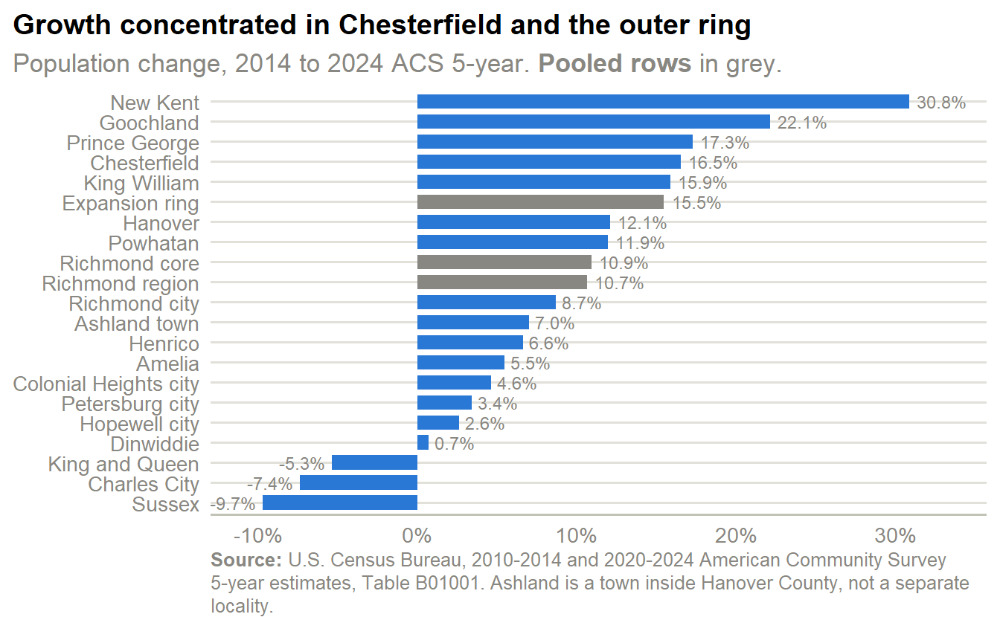
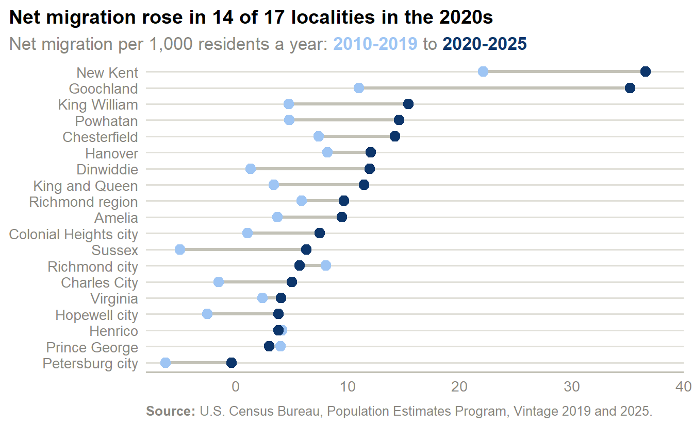
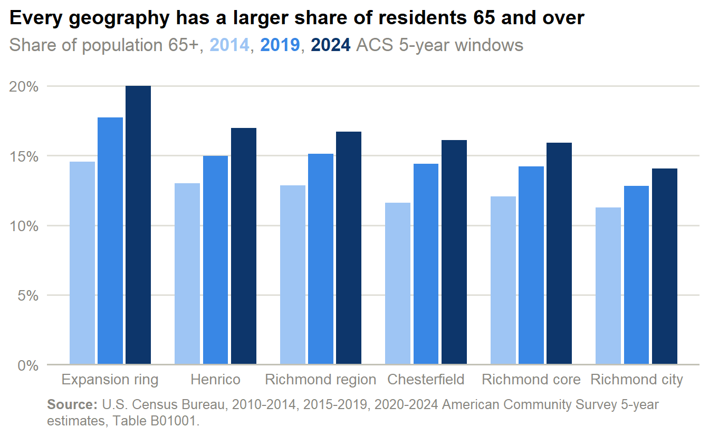
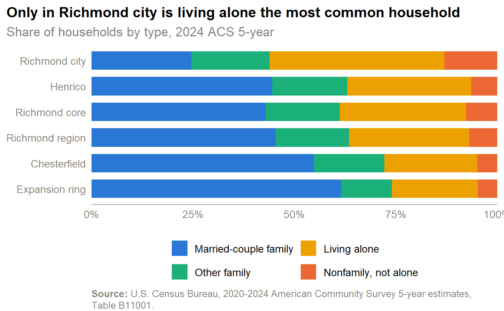
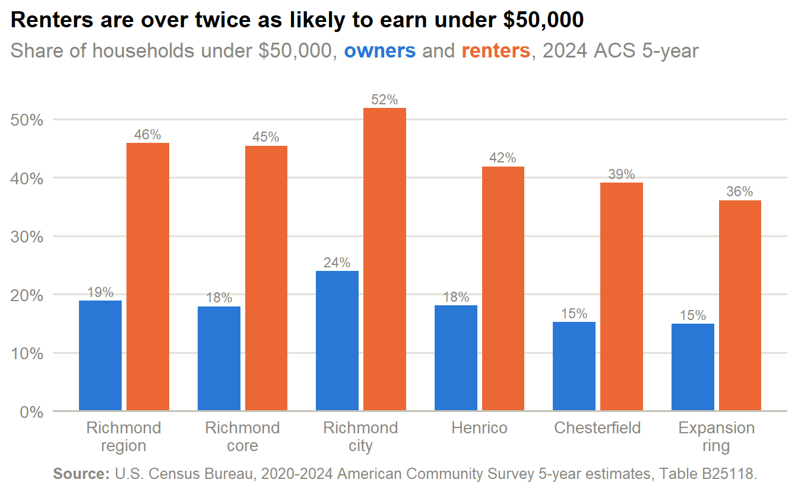

Demographics
Population, age, race and ethnicity, household composition, and income for the Richmond region, from the ACS 5-year estimates. Every trend compares three non-overlapping five-year windows ending 2014, 2019, and 2024.
Growth was strongest in Chesterfield and the expansion ring
- The region added 129,174 people between the 2014 and 2024 windows, growing 10.7% to 1,341,248.
- Chesterfield grew 16.5% and the four-locality expansion ring 15.5%, against 8.7% in Richmond city and 6.6% in Henrico.
- New Kent was the fastest-growing of the 17 localities (30.8%); Sussex was the slowest (-9.7%).
| Geography | 2014 | 2024 | Change | % change |
|---|---|---|---|---|
| Richmond region | 1,212,074 | 1,341,248 | 129,174 | 10.7% |
| Richmond core | 850,278 | 942,972 | 92,694 | 10.9% |
| Chesterfield | 324,337 | 377,869 | 53,532 | 16.5% |
| Henrico | 314,878 | 335,744 | 20,866 | 6.6% |
| Richmond city | 211,063 | 229,359 | 18,296 | 8.7% |
| Expansion ring | 169,696 | 195,949 | 26,253 | 15.5% |
| Hanover | 100,689 | 112,879 | 12,190 | 12.1% |
| Prince George | 36,792 | 43,146 | 6,354 | 17.3% |
| Petersburg city | 32,439 | 33,537 | 1,098 | 3.4% |
| Powhatan | 28,193 | 31,555 | 3,362 | 11.9% |
| Dinwiddie | 27,993 | 28,191 | 198 | 0.7% |
| Goochland | 21,627 | 26,410 | 4,783 | 22.1% |
| New Kent | 19,187 | 25,105 | 5,918 | 30.8% |
| Hopewell city | 22,375 | 22,959 | 584 | 2.6% |
| King William | 16,045 | 18,593 | 2,548 | 15.9% |
| Colonial Heights city | 17,542 | 18,352 | 810 | 4.6% |
| Amelia | 12,764 | 13,462 | 698 | 5.5% |
| Sussex | 11,923 | 10,765 | -1,158 | -9.7% |
| Ashland town | 7,264 | 7,772 | 508 | 7.0% |
| King and Queen | 7,073 | 6,695 | -378 | -5.3% |
| Charles City | 7,154 | 6,627 | -527 | -7.4% |
- The three core localities hold 70.3% of the region’s population, and Chesterfield alone is larger than either Henrico or Richmond city.
- The expansion ring’s 195,949 residents are about one-fifth of the core’s, so its fast percentage growth is a smaller absolute gain than Chesterfield’s.
The region has outgrown Virginia in nearly every year since 2011

- Between 2011 and 2025 the 17-locality region grew faster than Virginia in 13 of 14 years.
- The region’s fastest year was 2024, when it grew 1.47% (19,910 people).
- Virginia’s growth slowed to 0.24% at its low point; the region never dropped below 0.74%.
- Population Estimates Program figures and the ACS windows above measure different periods and use different methods, so their growth rates are not interchangeable.
Migration, not births, now drives the region’s growth

- Natural increase (births minus deaths) fell from 4,228 people a year in 2010-2019 to 1,451 a year in 2020-2025.
- Net migration rose: 7,298 a year in 2010-2019 and 13,035 a year in 2020-2025, so it supplied 63% of growth in the first era and 90% in the second.
- International migration peaked in 2024 at 10,787 people, well above any earlier year; domestic migration stayed between 6,069 and 7,543 a year after 2020.
- In 10 of the 17 localities, deaths exceeded births over 2020-2025.
| Geography | Era | Pop. change | Natural change | International | Domestic | Net migration | Migration share |
|---|---|---|---|---|---|---|---|
| Richmond city | 2010-2019 | 26,134 | 9,810 | 5,497 | 10,415 | 15,912 | 61% |
| Richmond city | 2020-2025 | 10,330 | 3,658 | 7,887 | -1,297 | 6,590 | 64% |
| Henrico | 2010-2019 | 23,565 | 11,730 | 13,404 | -1,375 | 12,029 | 51% |
| Henrico | 2020-2025 | 7,846 | 1,338 | 11,714 | -5,257 | 6,457 | 82% |
| Chesterfield | 2010-2019 | 35,604 | 13,502 | 4,993 | 17,366 | 22,359 | 63% |
| Chesterfield | 2020-2025 | 31,818 | 4,632 | 8,079 | 19,059 | 27,138 | 85% |
| Expansion ring | 2010-2019 | 15,948 | 883 | 715 | 14,358 | 15,073 | 95% |
| Expansion ring | 2020-2025 | 17,575 | -1,058 | 881 | 17,708 | 18,589 | 106% |
| Richmond region | 2010-2019 | 103,654 | 38,050 | 27,219 | 38,465 | 65,684 | 63% |
| Richmond region | 2020-2025 | 72,655 | 7,254 | 30,105 | 35,071 | 65,176 | 90% |
| Virginia | 2010-2019 | 511,820 | 332,270 | 255,828 | -76,654 | 179,174 | 35% |
| Virginia | 2020-2025 | 242,804 | 64,250 | 206,929 | -29,143 | 177,786 | 73% |
- The two eras are different lengths, so compare the per-year figures in the text rather than the era totals in the table.
- The expansion ring is the clearest case: its natural change is negative in 2020-2025 (-1,058), so net migration (18,589) is more than all of its growth.
Richmond city turned from domestic to international growth
![Two-panel horizontal stacked bar chart of annual net migration per 1,000 residents, split into international and domestic migration, for Richmond city, Henrico, Chesterfield, the expansion ring, the region, and Virginia, in 2010 to 2019 and 2020 to 2025. In Richmond city, domestic migration is positive in the first period and slightly negative in the second while international migration more than doubles. Henrico's domestic migration is negative in both periods. The expansion ring's net migration, almost entirely domestic, roughly doubles to about 19 per 1,000.](demographics_files/figure-html/fig-mig-composition-1.png)
- Richmond city’s international migration rate rose from 2.8 to 6.8 per 1,000 residents a year, while its domestic rate swung from +5.3 to -1.1.
- Henrico lost residents to domestic migration in both eras (-0.5 and -3.1) and grew on international migration (7.0 in 2020-2025).
- Chesterfield’s growth is mostly domestic movers: 10.0 domestic against 4.2 international per 1,000 in 2020-2025.
- The expansion ring’s net rate of 18.8 per 1,000 a year is almost entirely domestic (17.9).

- Net migration rates rose in 14 of the 17 localities between 2010-2019 and 2020-2025; the highest in 2020-2025 were New Kent (36.6 per 1,000 a year) and Goochland (35.2).
- The region’s rate rose from 5.9 to 9.7 per 1,000, against 2.4 to 4.1 for Virginia.
- The 3 localities whose rate was no higher in the 2020s than in the 2010s are Henrico, Prince George, and Richmond city.
How to read the migration estimates
Population Estimates Program migration figures are modeled from administrative records, not counted, and are revised each vintage. Net migration is international plus domestic; domestic migration is the net balance of moves between this locality and the rest of the United States. The 2010-2019 and 2020-2025 series come from different vintages, the second built on the 2020 Census, so the page compares the eras instead of joining them. The 2010 and 2020 components cover only April to June and are omitted, and a small residual (not shown) accounts for the rest of each year’s change.
The region is aging, and the expansion ring is aging fastest

- The region’s 65-and-over share rose from 12.9% to 16.7%, while its under-18 share fell from 22.7% to 21.3%.
- The expansion ring is the oldest geography: 20.0% are 65 or over, up +5.4 points since the 2014 window.
- Richmond city is the youngest of the three core localities at 14.1% 65 and over, and has the smallest share of children of the three (17.5%).
- Chesterfield has the largest share of children among the core three (23.7%), though that share also fell over the decade.
Diversity grew across the region, but Richmond city moved the other way

- The region’s White non-Hispanic share fell from 58.7% to 54.7%; the Hispanic or Latino share rose from 5.5% to 8.4%.
- Richmond city went the other direction: its White non-Hispanic share rose from 39.7% to 41.4%, and its Black share fell from 48.6% to 40.6%.
- Chesterfield and Henrico diversified: their White non-Hispanic shares fell to 56.4% and 49.5%, and Henrico’s Asian share reached 9.4%.
- The expansion ring remains the least diverse geography, at 80.3% White non-Hispanic.
Read the multiracial change with care
The “Multiracial” share roughly doubled in the region, but part of that is measurement, not demographic change. The Census Bureau revised how it codes and processes write-in race responses beginning with 2020 data, which raised the count of people classified as two or more races. The 2014 window predates that change and the 2024 window includes it, so treat the multiracial trend as partly methodological.
| Race / ethnicity | Richmond region | Richmond core | Richmond city | Henrico | Chesterfield | Expansion ring |
|---|---|---|---|---|---|---|
| White non-Hispanic | 54.7% (-4.0) | 50.3% (-4.8) | 41.4% (+1.7) | 49.5% (-6.5) | 56.4% (-7.8) | 80.3% (-2.7) |
| Black | 27.6% (-2.1) | 29.4% (-2.0) | 40.6% (-8.1) | 29.1% (-0.1) | 22.8% (+0.6) | 9.5% (-2.1) |
| Hispanic or Latino | 8.4% (+3.0) | 9.8% (+3.4) | 10.7% (+4.3) | 6.9% (+1.7) | 11.9% (+4.3) | 3.8% (+1.5) |
| Asian | 4.2% (+0.7) | 5.3% (+0.8) | 2.1% (-0.1) | 9.4% (+2.4) | 3.6% (+0.2) | 1.7% (+0.6) |
| Multiracial | 4.3% (+2.2) | 4.4% (+2.1) | 4.6% (+1.8) | 4.4% (+2.1) | 4.4% (+2.4) | 4.1% (+2.4) |
| Another race | 0.8% (+0.3) | 0.8% (+0.3) | 0.7% (+0.4) | 0.7% (+0.3) | 0.9% (+0.4) | 0.7% (+0.2) |
- Every geography’s Hispanic or Latino share rose over the decade, from 2.3% to 3.8% in the expansion ring and from 7.6% to 11.9% in Chesterfield.
- The Black share is the largest in Richmond city (40.6%) and smallest in the expansion ring (9.5%).
Household makeup splits the same way: singles in the city, married couples in the ring

- People living alone are 43.1% of Richmond city households, against 30.6% in Henrico, 22.9% in Chesterfield, and 21.1% in the expansion ring.
- Married-couple families are 61.4% of expansion-ring households and 54.8% of Chesterfield’s, but only 24.6% of Richmond city’s.
- Across the whole region, 29.6% of households are one person — a household type that often fits a smaller unit than the detached single-family homes that dominate the stock (see the Inventory page).
After inflation, incomes rose in every geography, fastest in Richmond city among the core localities

- The Richmond MSA’s median household income rose 9.6% in real terms, from $79,075.41 to $86,679 in 2024 dollars (45.2% before adjusting for inflation).
- Richmond city’s real median income rose 17.9%, faster than Henrico (9.1%) and Chesterfield (6.1%), but at $64,587 it remains well below both.
- The Richmond MSA ended the period close to Virginia’s median ($86,679 against $93,170) and far below the Washington MSA ($126,684).
| Geography | 2014 | 2024 | Nominal change | Real change |
|---|---|---|---|---|
| Washington MSA | $91,756 | $126,684 | 38.1% | 4.2% |
| New Kent | $73,030 | $123,314 | 68.9% | 27.4% |
| Goochland | $82,460 | $118,931 | 44.2% | 8.8% |
| Hanover | $77,550 | $112,805 | 45.5% | 9.8% |
| Powhatan | $75,447 | $110,537 | 46.5% | 10.6% |
| Chesterfield | $72,514 | $101,931 | 40.6% | 6.1% |
| Charlottesville MSA | $59,189 | $93,598 | 58.1% | 19.3% |
| Virginia | $64,792 | $93,170 | 43.8% | 8.5% |
| Henrico | $61,438 | $88,783 | 44.5% | 9.1% |
| Richmond MSA | $59,677 | $86,679 | 45.2% | 9.6% |
| Hampton Roads MSA | $59,244 | $82,330 | 39.0% | 4.9% |
| Richmond city | $41,331 | $64,587 | 56.3% | 17.9% |
| Ashland town | $41,582 | $61,164* | 47.1% | 11.0% |
- Inflation consumed most of the nominal gain: the Richmond MSA’s median rose 45.2% as published but only 9.6% after adjusting for prices.
- Ashland’s median ($61,164) is a small-town estimate with a wide margin of error; it carries a reliability marker in the table.

- 20.2% of Richmond city households earn under $25,000, against 8.4% in Chesterfield and 7.6% in the expansion ring.
- At the top, 34.4% of expansion-ring households earn $150,000 or more, against 29.2% in Chesterfield and 18.1% in Richmond city.
- Income bands are fixed nominal thresholds, so a rising share in the top band partly reflects inflation, not only real gains.
Renter households skew far lower-income than owners

- Across the region, 45.9% of renter households earn under $50,000, against 18.9% of owner households.
- In Richmond city, 51.9% of renters and 24.0% of owners fall under that line.
- Even in the expansion ring, where incomes are highest, 36.1% of renters earn under $50,000 — the rental market there serves a lower-income group than the ownership market does.
Small-geography reliability
Ashland and the four expansion-ring localities have much smaller samples than the core. 5 of the 30 race-and-ethnicity cells for those five geographies fall below the CV-30 reliability threshold in the 2024 window. Figures here use the pooled expansion-ring row, and tables suppress low-reliability cells (—) and mark medium-reliability ones (*).
What this page shows
- Growth: the region grew 10.7%, led by Chesterfield and the expansion ring, and outgrew Virginia in 13 of 14 years.
- Migration: net migration supplied 90% of regional growth in 2020-2025, as natural increase fell.
- Age: the 65-and-over share rose in every geography, and the expansion ring is the oldest.
- Race and ethnicity: the region diversified, but Richmond city’s White share rose while its Black share fell.
- Households: living alone dominates in Richmond city (43.1%); married couples dominate in the ring.
- Income: real median income rose everywhere, and renters earn far less than owners — the gap the market page turns into cost burden.